Major Cities and Urban Centers
Shimla
- The Ridge: A spacious open space in the heart of Shimla, offering stunning views and vibrant local culture.
- Christ Church: An iconic church known for its neo-gothic architecture, located on The Ridge.
- Jakhoo Temple: An ancient temple dedicated to Lord Hanuman, situated on Jakhoo Hill, providing panoramic views of the city.
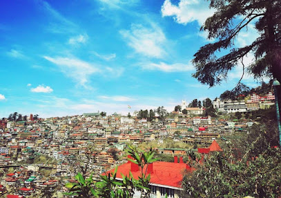
- Mall Road: A famous shopping street lined with shops, cafes, and stunning views of the surrounding mountains.
- Summer Hill: A picturesque hill offering a serene environment, perfect for nature walks.
- Himalayan Nature Park: A beautiful park showcasing the flora and fauna of the region, ideal for nature lovers.
Manali
- Solang Valley: A beautiful valley known for adventure sports like skiing, paragliding, and zorbing.
- Hadimba Temple: An ancient temple surrounded by cedar forests, dedicated to Hadimba Devi.
- Manu Temple: A sacred temple dedicated to the sage Manu, located in the old Manali village.
- Old Manali: A charming village known for its cafes, guesthouses, and a relaxed atmosphere.
- Vashisht Village: Famous for its hot springs and temples, offering stunning views of the surrounding mountains.
- Rohtang Pass: A high mountain pass offering breathtaking views and a gateway to several trekking routes.
Dharamshala
- McLeod Ganj: The heart of Dharamshala, known for its Tibetan culture, monasteries, and the residence of the Dalai Lama.
- Bhagsunath Temple: An ancient temple dedicated to Lord Shiva, popular for its scenic waterfall.
- Dharamkot: A tranquil village known for its stunning views of the Dhauladhar range and trekking routes.
- Namgyal Monastery: The largest Tibetan monastery outside Tibet, offering meditation and spiritual teachings.
- Triund Trek: A popular trekking route providing breathtaking views of the mountains and valleys.
- Dal Lake: A serene lake surrounded by deodar trees, ideal for picnics and leisurely walks.
Kullu
- Kullu Valley: Known for its scenic beauty, lush green hills, and vibrant culture, a perfect spot for nature lovers.
- Hadimba Temple: An ancient temple dedicated to Goddess Hadimba, surrounded by cedar forests and beautiful scenery.
- Raghunath Temple: A significant temple dedicated to Lord Rama, showcasing traditional architecture and spiritual significance.
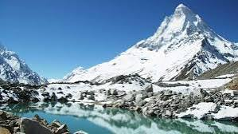
- Solang Valley: Famous for adventure sports, including paragliding, skiing, and zorbing, set against stunning mountain views.
- Manikaran: A pilgrimage site known for its hot springs and beautiful Gurudwara, attracting both tourists and devotees.
- Great Himalayan National Park: A UNESCO World Heritage site, perfect for trekking and experiencing diverse flora and fauna.
Dalhousie
- Khajjiar: Known as the "Mini Switzerland of India," this picturesque meadow offers stunning views and outdoor activities.
- St. John’s Church: A historic church featuring beautiful architecture and serene surroundings.
- Dalhousie Mall: A charming promenade lined with shops, cafes, and scenic views, perfect for leisurely walks.
- Bakrota Hills: Offers stunning views and a peaceful atmosphere, ideal for trekking and nature walks.
- Chamba: A nearby town known for its ancient temples and rich cultural heritage.
- Dalhousie Heritage Walk: A guided tour through the town’s historical sites, showcasing its colonial architecture.
Hill Stations
Chail
- Chail Palace: A stunning palace built in the 19th century, surrounded by lush greenery and offering breathtaking views.
- Highest Cricket Ground: The world’s highest cricket ground, known for its scenic beauty and unique location.
- Sidh Baba Ka Mandir: A revered temple dedicated to a local saint, set amidst tranquil surroundings.
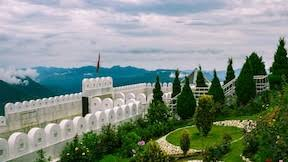
- Kali Ka Tibba: A temple dedicated to the goddess Kali, located on a hill with stunning panoramic views.
- Chail Wildlife Sanctuary: A serene sanctuary home to diverse flora and fauna, perfect for nature enthusiasts.
- Chail Gurudwara: A peaceful place of worship set in a picturesque location, welcoming visitors of all faiths.
Nahan
- Renuka Lake: A serene lake surrounded by lush hills, ideal for boating and picnicking.
- Jai Narayan Palace: A historical palace offering a glimpse into the royal past of Nahan.
- Rani Tal: A picturesque spot with beautiful gardens, perfect for relaxation and family outings.
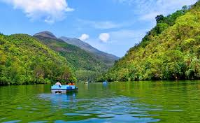
- Kaali Ka Tibba: A hilltop temple offering stunning views of the surrounding mountains and valleys.
- Nahan Fort: An ancient fort with historical significance, providing panoramic views of the area.
- Giri Nagar: A tranquil spot known for its natural beauty, ideal for nature walks and photography.
Palampur
- Tea Gardens: Famous for its lush tea plantations, offering stunning views and fresh tea experiences.
- Baijnath Temple: An ancient temple dedicated to Lord Shiva, known for its exquisite architecture and historical significance.
- Palampur Market: A bustling market where visitors can buy local handicrafts, tea, and other products.
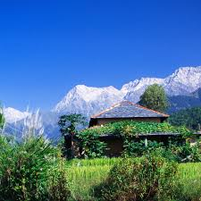
- Bir Billing: Known for paragliding, it offers breathtaking views and adventure sports.
- Chamunda Devi Temple: A revered temple situated on the banks of the Baner River, attracting numerous pilgrims.
- Palampur Nature Park: A beautiful park with scenic views, perfect for nature walks and picnics.
Solan
- Koti-Kanal: A scenic spot known for its picturesque views, ideal for trekking and nature walks.
- Shoolini Mata Temple: A revered temple located on a hill, attracting numerous devotees and offering stunning views of the valley.
- Jatoli Shiv Temple: An ancient temple dedicated to Lord Shiva, known for its unique architecture and serene surroundings.
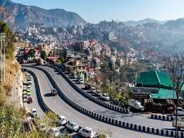
- Solan Brewery: One of the oldest breweries in India, known for its beer production and interesting tours.
- Barog: A charming hill station nearby, famous for its scenic beauty and tranquility.
- Dagshai: A quaint town known for its colonial architecture and panoramic views of the surrounding hills.
Chamba
- Khajjiar: Often referred to as the "Mini Switzerland of India," known for its lush green meadows and scenic beauty.
- Chamba Church: A historic church with beautiful architecture, reflecting the colonial influence in the region.
- Bhuri Singh Museum: A museum showcasing the rich cultural heritage of Chamba, including artifacts and traditional crafts.
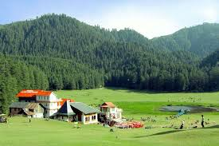
- Chamba Raj Mahal: The royal palace featuring stunning architecture and historical significance.
- Manimahesh Lake: A sacred lake surrounded by the majestic Dhauladhar range, attracting pilgrims and trekkers alike.
- Bharmour: A quaint village known for its ancient temples and serene environment.
Natural Attractions and Adventure
Spiti Valley
- Kaza: The largest town in Spiti, serving as a base for exploring the valley's stunning landscapes.
- Key Monastery: A famous Buddhist monastery perched on a hill, offering breathtaking views and spiritual experiences.
- Chandratal Lake: A beautiful crescent-shaped lake known for its mesmerizing blue waters and serene environment.
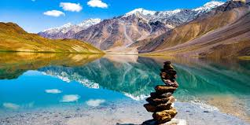
- Pin Valley National Park: A protected area known for its unique wildlife and stunning landscapes, perfect for trekking and nature walks.
- Langza Village: Famous for its fossils and scenic beauty, offering great opportunities for photography and exploration.
- Stargazing: Spiti is renowned for its clear night skies, making it a prime location for stargazing and astrophotography.
Lahaul Valley
- Keylong: The administrative center of Lahaul, surrounded by stunning mountains and valleys, offering trekking opportunities.
- Chandra Tal Lake: A breathtaking crescent-shaped lake known for its serene beauty, perfect for camping and stargazing.
- Guru Ghantal Monastery: An ancient monastery perched on a hill, offering panoramic views and a glimpse into local culture.
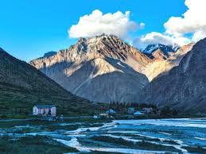
- Rudraprayag Trek: A challenging trek that offers spectacular views of the mountains and the chance to explore untouched nature.
- Atal Tunnel: The world’s longest highway tunnel above 10,000 feet, providing access to Lahaul Valley year-round.
- Camping at Chandra Tal: Experience the beauty of the valley by camping near this picturesque lake, surrounded by snow-capped peaks.
Kinnaur
- Sangla Valley: Known for its stunning landscapes, lush greenery, and the Baspa River, perfect for trekking and camping.
- Chitkul: The last inhabited village near the Indo-Tibetan border, famous for its breathtaking views and serene environment.
- Kinnaur Kailash: A sacred mountain revered by both Hindus and Buddhists, offering challenging treks for adventure enthusiasts.
- Spiti Valley: Renowned for its rugged terrain, this region offers thrilling experiences like biking and high-altitude trekking.
- Apple Orchards: Visit the famous apple orchards in Kinnaur, especially during harvest season, for a delightful experience.
- Riverside Camping: Enjoy camping along the banks of the Sutlej River, surrounded by majestic mountains and starry skies.
Parvati Valley
- Kheerganga: A beautiful trekking destination known for its hot springs and stunning views of the Himalayas.
- Malana Village: An ancient village famous for its unique culture and architecture, offering a glimpse into local traditions.
- Chalal Village: A charming village that serves as a base for trekking and adventure activities, surrounded by lush greenery.

- Parvati River: Ideal for river rafting and fishing, offering thrilling experiences amidst breathtaking landscapes.
- Snow Camping: Adventure seekers can enjoy camping in the snow, with opportunities for skiing and snowboarding.
- Trekking Trails: Various trails leading to stunning viewpoints and unexplored areas, perfect for nature enthusiasts.
Pilgrimage Sites
Jawalamukhi
- Jawalamukhi Temple: A famous Hindu temple dedicated to Goddess Jwala, known for its flames that are believed to be the manifestation of the goddess.
- Bangla Sahib Gurdwara: A serene gurdwara nearby, offering a peaceful environment for meditation and reflection.
- Shree Bhadrakali Temple: A temple dedicated to Goddess Bhadrakali, known for its beautiful architecture and spiritual significance.
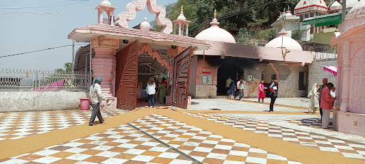
- Chintpurni Temple: Another important temple located nearby, dedicated to Goddess Chintpurni, known for its tranquil surroundings.
- Hanuman Mandir: A revered temple dedicated to Lord Hanuman, attracting many devotees.
- Local Markets: Explore the local markets for traditional handicrafts and local cuisine, adding to the spiritual experience.
Chamunda Devi Temple
- Location: Situated in the Kangra district of Himachal Pradesh, the temple is dedicated to Goddess Chamunda, a fierce form of Durga.
- Significance: The temple is a significant pilgrimage site, known for its spiritual ambiance and beautiful surroundings.
- Festivals: The temple hosts several festivals, especially during Navratri, attracting thousands of devotees.
- Architecture: The temple features traditional Himachali architecture, adorned with intricate carvings and vibrant colors.
- Scenic Beauty: Surrounded by lush hills and the serene Baner River, the temple offers breathtaking views and a tranquil environment.
- Access: The temple is accessible by road, with a short trek leading to its entrance, making it a popular spot for both pilgrims and tourists.
Naina Devi
- Naina Devi Temple: A revered Hindu temple dedicated to Goddess Naina Devi, located on a hilltop offering stunning views of the surroundings.
- Bhakra Dam: One of the highest dams in Asia, providing breathtaking scenery and opportunities for photography.
- Naina Devi Wildlife Sanctuary: A beautiful sanctuary home to diverse flora and fauna, ideal for nature lovers and trekkers.
- Shiv Bhawani Temple: A nearby temple dedicated to Lord Shiva, attracting many pilgrims.
- Local Markets: Explore local handicrafts and offerings for the deities in the vibrant markets near the temple.
- Festivals: Experience the vibrant festivals celebrated here, especially during Navratri, attracting numerous devotees.
Wildlife Sanctuaries and National Parks
Great Himalayan National Park
- Flora and Fauna: Home to diverse species, including the Himalayan black bear, snow leopard, and several species of birds and plants.
- Trekking Trails: Offers numerous trekking routes, allowing visitors to explore the stunning landscapes and rich biodiversity.
- Conservation Efforts: Recognized for its conservation initiatives, focusing on protecting the unique ecosystem and wildlife.

- Adventure Activities: Popular for trekking, camping, and nature walks, attracting adventure enthusiasts.
- Cultural Significance: Surrounded by traditional villages, offering a glimpse into the local culture and lifestyle.
- Best Time to Visit: The park is best visited between March and October for pleasant weather and wildlife spotting.
Pin Valley National Park
- Location: Nestled in the Spiti Valley, this park is known for its stunning landscapes and diverse wildlife.
- Flora: Home to unique flora including alpine meadows, juniper, and various medicinal plants.
- Fauna: Habitat for snow leopards, ibex, and various bird species, making it a paradise for wildlife enthusiasts.
- Best Time to Visit: The park is best visited between May and October when the weather is pleasant.
- Adventure Activities: Popular for trekking, camping, and bird watching amidst stunning natural scenery.
- Cultural Significance: The park is also rich in cultural heritage, with nearby villages showcasing traditional lifestyles.
Kalatop Khajjiar Sanctuary
- Overview: A beautiful wildlife sanctuary known for its rich biodiversity, dense deodar forests, and stunning landscapes.
- Flora and Fauna: Home to a variety of wildlife, including species like the Himalayan Black Bear, Ghoral, and various birds.
- Activities: Popular for trekking, bird watching, and enjoying the scenic views of Khajjiar, often referred to as the "Mini Switzerland of India."
- Best Time to Visit: The ideal time to explore the sanctuary is from March to June and September to December.
- Location: Situated near Khajjiar in the Chamba district, easily accessible from Dalhousie.
- Conservation Efforts: The sanctuary plays a vital role in preserving the unique ecosystem of the region.
Simbalbara National Park
- Flora and Fauna: The park is home to diverse flora, including oak, pine, and rhododendron trees, and a variety of wildlife such as leopards, deer, and numerous bird species.
- Scenic Beauty: The park offers stunning landscapes, lush green hills, and serene surroundings, making it a perfect spot for nature lovers and photographers.
- Trekking and Wildlife Viewing: Visitors can enjoy trekking trails and wildlife viewing opportunities, providing an immersive experience in the natural habitat.
- Visitor Facilities: The park provides various facilities for visitors, including interpretation centers and guided tours to enhance the experience.
- Best Time to Visit: The ideal time to visit is from March to June and September to November, when the weather is pleasant and wildlife is more active.
- Nearby Attractions: The park is close to other attractions like Chail and Kasauli, making it easy to plan a comprehensive trip to the region.
Lakes
Dal Lake
- Scenic Beauty: Dal Lake is known for its stunning natural beauty, surrounded by lush mountains and pine forests.
- Shikara Rides: Visitors can enjoy traditional shikara rides, offering a unique way to explore the lake.
- Camping: The area around the lake provides excellent opportunities for camping and nature walks.
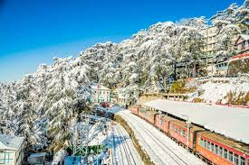
- Photography: The lake's picturesque setting makes it a popular spot for photography enthusiasts.
- Flora and Fauna: The region is rich in biodiversity, making it an ideal location for nature lovers.
- Nearby Attractions: Explore nearby attractions like the local markets and temples for a complete experience.
Renuka Lake
- Renuka Lake: A beautiful freshwater lake surrounded by lush green hills, known for its serene atmosphere and stunning views.
- Renuka Wildlife Sanctuary: A sanctuary located near the lake, home to diverse flora and fauna, perfect for nature lovers.
- Renuka Ji Temple: A sacred temple dedicated to Goddess Renuka, attracting many pilgrims and visitors.

- Adventure Activities: The lake offers various activities such as boating and fishing, making it a popular spot for adventure enthusiasts.
- Scenic Viewpoints: Several viewpoints around the lake provide breathtaking views, ideal for photography and relaxation.
- Cultural Festivals: The area hosts various local festivals that showcase the culture and traditions of Himachal Pradesh.
Prashar Lake
- Prashar Lake: A stunning alpine lake surrounded by snow-capped mountains, known for its tranquil beauty and scenic views.
- Prashar Rishi Temple: An ancient temple dedicated to Sage Prashar, located on the banks of the lake, featuring intricate wooden architecture.
- Local Flora and Fauna: The area around the lake is rich in diverse flora and fauna, making it a great spot for nature enthusiasts.
- Trekking Routes: Several trekking routes lead to the lake, offering breathtaking views and an adventure for trekkers.
- Camping Opportunities: The lake area provides excellent spots for camping under the stars, ideal for nature lovers.
- Best Time to Visit: The ideal time to visit is during the summer months from March to June when the weather is pleasant.
Rewalsar Lake
- Rewalsar Lake: A stunning lake surrounded by lush greenery and famous for its serene beauty and spiritual significance.
- Guru Padmasambhava Monastery: A beautiful monastery located near the lake, attracting many visitors seeking peace and spirituality.
- Rewalsar Village: A quaint village known for its traditional Himachali culture and warm hospitality.
- Mahakal Cave: A sacred cave nearby that holds religious significance and offers a tranquil environment for meditation.
- Local Markets: Vibrant markets selling handicrafts, local produce, and souvenirs, reflecting the culture of Himachal Pradesh.
- Trekking Trails: Scenic trails around the lake for trekking enthusiasts, offering breathtaking views of the landscape.
Chandratal Lake
- Chandratal Lake: Known as the "Moon Lake," this stunning high-altitude lake is famous for its crescent shape and mesmerizing blue waters.
- Camping: The area around the lake offers various camping options, providing a perfect backdrop for stargazing at night.
- Trekking: Popular starting point for treks like the Chandratal to Baralacha trek, attracting adventure enthusiasts.

- Photography: The lake's stunning landscape makes it a favorite spot for photographers and nature lovers.
- Wildlife: The surrounding area is home to unique flora and fauna, making it a great spot for nature enthusiasts.
- Accessibility: While remote, the lake is accessible by road during the summer months, attracting tourists from around the world.
Other Attractions
Tattapani
- Hot Springs: Tattapani is famous for its natural hot springs, believed to have therapeutic properties.
- River Sutlej: A picturesque river offering opportunities for fishing, rafting, and enjoying scenic views.
- Mahunag Temple: An ancient temple dedicated to the local deity, providing a serene spiritual atmosphere.
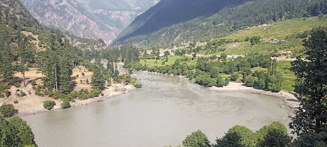
- Adventure Activities: The area offers trekking, river rafting, and camping for adventure enthusiasts.
- Local Cuisine: Enjoy delicious Himachali food at local eateries, featuring traditional flavors.
- Scenic Beauty: Surrounded by lush greenery and majestic hills, Tattapani is perfect for nature lovers.
Barot Valley
- Barot Dam: A serene dam surrounded by lush green landscapes, ideal for picnics and photography.
- Uhl River: Perfect for fishing and river rafting, offering beautiful views of the valley.
- Bhaturu Trek: A popular trekking route that provides breathtaking views of the surrounding mountains.

- Shanan Hydel Project: An engineering marvel that offers insights into hydropower generation.
- Joginder Nagar: The nearest town with local markets and a glimpse into the daily life of the locals.
- Trekking and Camping: Numerous trails and camping spots available for adventure enthusiasts.
Bir Billing
- Paragliding: Bir Billing is renowned as one of the best paragliding spots in India, offering breathtaking views of the Dhauladhar range.
- Bhattu Kothi: A scenic spot ideal for trekking and nature walks, providing stunning vistas of the surrounding landscape.
- Bir Monastery: A beautiful Tibetan monastery known for its serene environment and intricate architecture.

- Palpung Sherabling Monastery: A large Tibetan Buddhist monastery known for its impressive architecture and spiritual ambiance.
- Chokling Monastery: A peaceful monastery offering meditation sessions and a glimpse into Tibetan culture.
- Local Cafes: Experience local cuisine and Tibetan food at charming cafes scattered throughout Bir.
Khajjiar
- Khajjiar Lake: A serene lake surrounded by lush green meadows and tall deodar trees, perfect for picnics and relaxation.
- Khajji Naga Temple: An ancient temple dedicated to the serpent god, known for its unique architecture and spiritual significance.
- Khajjiar Mini Switzerland: Often referred to as "Mini Switzerland," this meadow offers breathtaking views and adventure activities like paragliding.

- Deodar Forests: Dense forests of deodar trees, offering beautiful trails for hiking and nature walks.
- Paragliding: An adventure sport that allows visitors to experience the stunning aerial views of Khajjiar and the surrounding valleys.
- St. Mary's Church: A charming church that reflects British architecture, located amidst scenic surroundings.